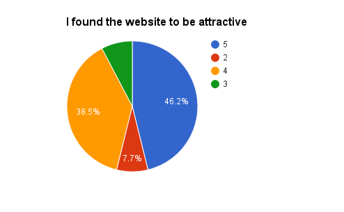
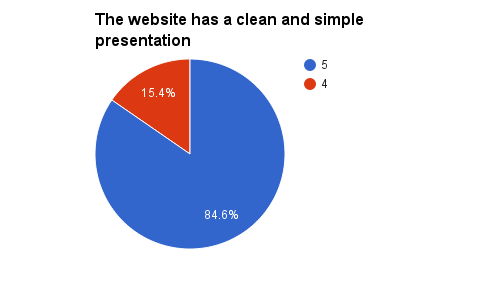
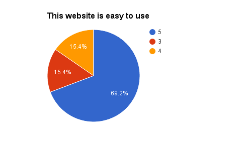
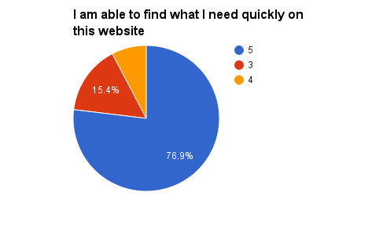
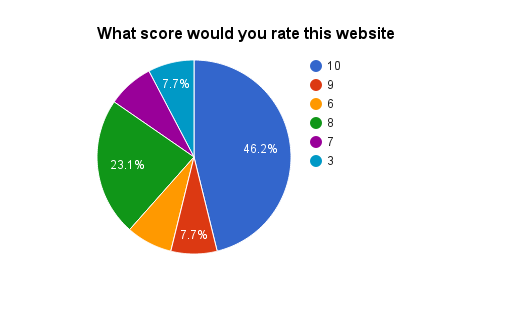

Client Name: Gunnar Cottonfist
Website Name: Dropphase: Fits like a glove
Contact
Person: Gunnar Cottonfist
Link to our website: http://folk.ntnu.no/ninhqd/projectcottonfist
We simply asked our test subjects to browse our website on their own accord and then fill out our Google
Form survey. The survey queried the test subject on a couple of questions in which they answered either
using a slide from 1 to 5 or 1 to 10 (strongly disagree to strongly agree), or replying with a small
paragraph.
The questions are mostly about the aesthetics of the website, with some questions about how easy it was to
use, or what errors or difficulties they encountered.
The final questions ask about their professions and which browser they used to browse the website with. As
we decided not to focus on different platforms such as tablets or phones due to time constraints, we asked
the subjects to only browse the website using either a laptop or a desktop PC.
Link to the Google Form Here
After feeling that the website was completed, we created the survey to acquire feedback from a range of
different people. The survey was sent to acquaintances whom we know to like the puppet industry. In
addition, we sent the survey to some fellow students to get their academic views.
From our survey, which 13 people kindly replied to, 30.8% where unspecified students, 23.1% where
unspecified private sector employees, 30.8% had art related occupations, 7.7% where unemployed, and 7.7%
worked in an unspecified official sector.
We where quite happy with the results of the survey as we did not expect to have over 30% of the subjects to
have art related professions, though it is worth to mention hat 30.8% of 13 people is only 4 people.
Name: Mads
Age: 25
Occupation: Student (Computer Science)
OS: Windows 10
Browser: Chrome
Instructions given:
Go to given address, browse a little. tell me what works and what doesn't
Observations:
At first when he arrived to splash screen, his initial response to it was to navigate with the arrows on the
keyboard, this didn’t work. Second attempt was scrolling the mousewheel and we got into the main page.
Instead of initially using the nav bar he looked into the main page content to check what this is about, he
instantly located browse bar and went to see the stock. Since this user is not super familiar with the
different types of puppets he didn’t identify the puppet types by their types until his mouse hovered over
Puppet Info nav-button where he could easily see the types of puppets we had without leaving the page. He
clicked to the puppet info page using the drop down buttons to see more about that specific type of puppet,
and clicked to see our stock of that type. He then proceeded to navigate back and forth to see about the
different types. After about 2 more minutes of browsing we asked him a couple of questions.
Questions:
Summary of answers:
He could identify that it was about puppets but not by the splash screen but by the main page.
Navigation was intuitive and quick, nothing were more that 2 clicks away.
The style was clean and professional, but with the pastel colors it added a hint of playfulness.
He liked the ability to instantly find what kind of puppets we had of that type after he had read about
them. He didn’t like that he didn’t have any opportunity to contact us, either through phone or e-mail.
The majority of the questions was about the site aesthetics, as mentioned above (see 2. Testing Document). The responses where mostly positive, with 46.2% giving a 5 (strongly agree) and 38.5% giving a 4 on the pages attractiveness. 84.6% gave a 5 and the remaining 15.4% gave a 4 when asked if the site site had a clean and simple presentation or not. 69.2% strongly agreed that the site was easy to use, and 76.9% said that they were able to quickly find what they needed on the website. The final score-based question was about giving the site a rating from 1 to 10 (terrible to excellent), where 46.2% gave a 10/10, and only 7.7% gave it a score below 5.
    
We also asked the subject, if they wanted, to write something about what they liked about the website. One
seubject gave a positive response to the color scheme that we chose, which pleased Mr. Cottonfist quite a
lot. Another subject said that he or she quite liked the simplisity of the site, and another one said that
he or she quite liked that the puppets stayed expanded when you clicked on them, and it was quite easy due
to that to navigate back to it.
The last important question we asked was if the subject experienced any bugs during his or her test. Luckily
we received no reports of any bugs, however, one user kindly responded with a request to allow the subject
to access the front page without the need of scrolling with the mouse wheel, and rather click on the arrow
or use the arrow keys.